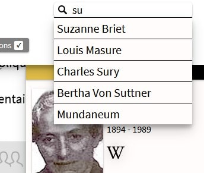

Éléments d'interface
L'Otletosphère est un outil de visualisation. Le Réseau occupe donc une place centrale sur le site. L'interface permet de consulter par différentes vues la base de données dont est extrait le Réseau.
L'interface est divisée en trois sections empilées et présentées dans la navigation du site :
- À propos
- Réseau (section d'arrivée)
- Fiches
Réseau¶
Il s'agit de vue primaire : toutes les entités de la base de données sont représentées au sein de ce graphique. N'hésitez pas à consulter le tutoriel de navigation pour l'utiliser efficacement.
Les nœuds et liens du réseau sont affichés dans différentes couleurs correspondant aux différents groupes selon les relations des entités avec Paul Otlet.
Cliquer sur l'un des nœuds va vous permettre de le sélectionner l'entité.
Volet de description¶

Il peut être ouvert en cliquant sur l'icone i ou en séléctionnant un nœud.
Il contient toutes les informations stockées dans la base de données au sujet de l'entité sélectionnée.
Retrouver le nœud sélectionné
Où que vous soyez, cliquer sur le bouton "Visualiser" en haut du volet de description affiche le nœud au sein du Réseau.
Connexions¶
Au bas du volet de description on retrouve les informations de connexion de l'entité. Il s'agit des nœuds liés à celui qui a été sélectionné : ils sont listés et cliquer permet de sélectionner l'entité.
Entête¶
Cet élément fait le liens entre les trois sections du site. On peut y exectuer les tâches suivantes qui prennent immédiatement effet sur l'ensemble du site :
- Retour à l'accueil
- Changement de langue
- Changement de section
- Recherche d'entité
- Tri des entités affichées
Recherche¶

La barre de recherche permet de trouver une entité selon son label. Au fur et à mesure de la saisie, les labels les plus pertinent apparaissent. Cliquer sur une proposition permet de sélectionner l'entité liée.
Info
Vider la barre de recherche cache la liste des résultats.
Fiches¶
Cette section est la vue secondaire : les entités ne sont plus mises en relation sous forme graphique, mais sous forme de cartes, listées et réparties par ordre alphabétique.
Le volet de description est toujours affiché et ne peut être fermé.
Cliquer sur une carte permet de sélectionner l'entité.
Tip
Une liste alphabétique à gauche vous permet de sauter d'une lette à une autre.
À propos¶
Cette dernière section contient une brève description du projet et de ses acteurs, qu'il s'agisse de l'équipe de conception et développement ou bien des partenaires et mécènes.